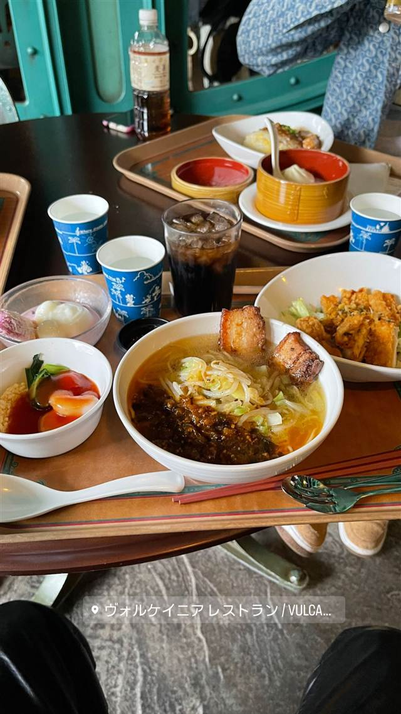

中華 · 中華料理 · 舞浜
ヴォルケイニア・レストラン
ネモ船長の地熱発電所という設定で味わう麻婆豆腐あんかけチャーハン
ヴォルケイニア レストラン / VULCA…
WHY GO
ネモ船長の地熱発電所という設定の洞窟内で食事するテーマレストラン
東京ディズニーシーのミステリアスアイランドにある「ヴォルケイニア・レストラン」は、ネモ船長の地熱発電所を改装したという設定の中華料理店。店名はラテン語で「火山」を意味し、プロメテウス火山の地熱で調理するという世界観のもと、麻婆豆腐などの中華メニューをセルフサービスで提供している。
TRIVIA
豆知識
- 店名Vulcaniaはラテン語で「火山」を意味する
- ネモ船長がクルーの食堂として使っていた地熱発電所という設定
- ジュール・ヴェルヌの世界観がモチーフのミステリアスアイランド内にある
REVIEWS
世間の評判
3.48食べログ
パーク内の本格中華とコスパ
- エビチリや麻婆豆腐などパーク内でも本格的な中華だと評価する声が多い
- 味・価格・ボリュームのバランスが良く良心的だと評価する声が多い
- 混雑する食事時には入店まで外に並ぶこともあるという声がある
食べログ 口コミ722件
| 創業 | 東京ディズニーシー開園（2001年）当初からある大型レストラン |
|---|---|
| 看板 | 麻婆豆腐、麻婆豆腐のあんかけチャーハンなどの中華料理 |
| こだわり | ネモ船長の地熱発電所を改装したという設定で、「プロメテウス火山」の地熱による高火力調理をテーマにしたビュッフェテリア（セルフサービス）式の中華料理 |
| どこから | 23区の外れ・近郊 |
| 行くなら | 行列 |
| 場所 | 舞浜 千葉県浦安市舞浜1-13 東京ディズニーシー内（ミステリアスアイランド） |
| メモ | 洞窟内に広がる約610席の大型レストラン、セルフサービス方式 |
食べたもの：ディズニーシーの食事